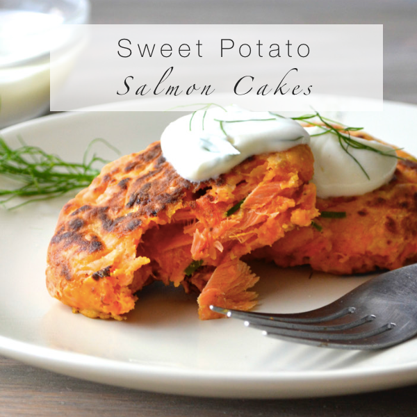

Healthy sweet potato salmon cakes that take just 15 minutes to make! They’re flavorful, crispy on the outside, and perfectly moist thanks to the sweet potato. Serve with your favorite salad, veggies, and grains!

Ingredients
1/2 cup cooked quinoa I used red for this recipe because I liked the color
1 medium sweet potato boiled and mashed
1 6 oz can wild salmon (skinless and boneless if possible)
2 large eggs
4 green onions minced
2 tablespoons gluten-free cornmeal
Salt & pepper to taste
Oil for cooking
Nutrition
Fat 6g 9%
Cholesterol 70mg 23%
Sodium 96mg 4%
Potassium 291mg 8%
Carbohydrates 10g 3%
Fiber 1g 4%
Sugar 1g 1%
Protein 8g 16%
Vitamin A 3245IU 65%
Vitamin C 2.1mg 3%
Calcium 26mg 3%
Iron 1.1mg 6%
Instructions
Add all the ingredients in a large mixing bowl and mix with a wooden spoon (or your hands!) until everything is combined and a dough has formed.
Form the dough into 6 patties, place on a plate and set aside.
Heat the oil in a 10" skillet over medium heat. Saute the salmon cakes for 3 - 5 minutes per side, until browned, crispy and heated through.
Serve warm with your desired dipping sauce (we used guacamole with sriracha mixed in)